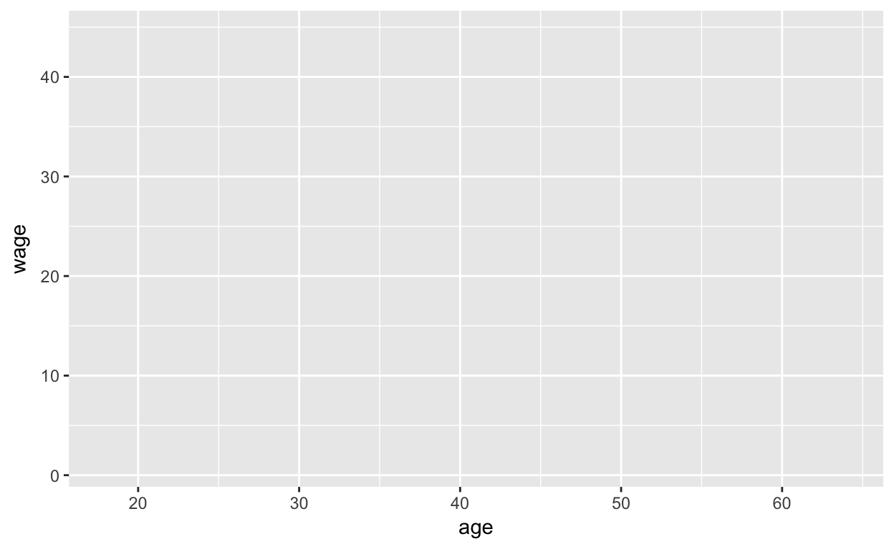
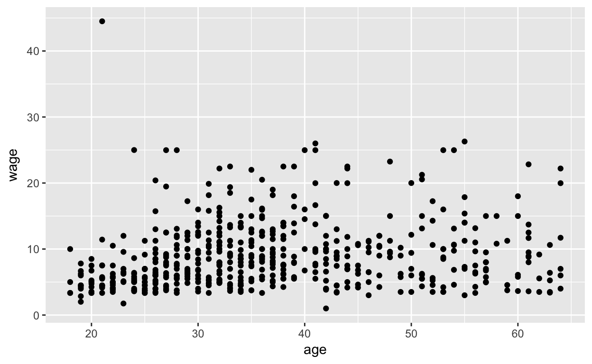
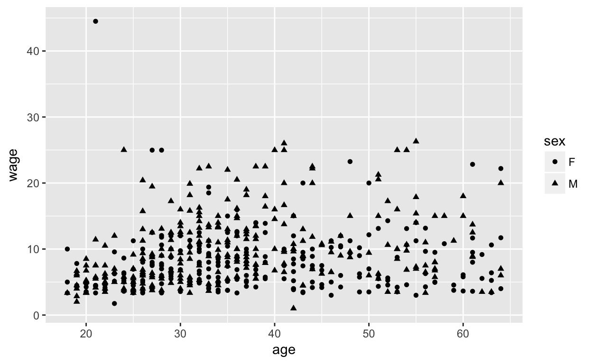
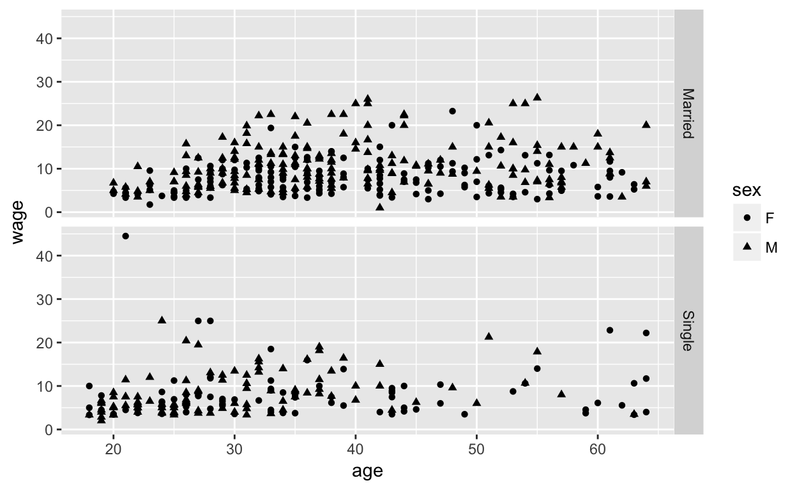
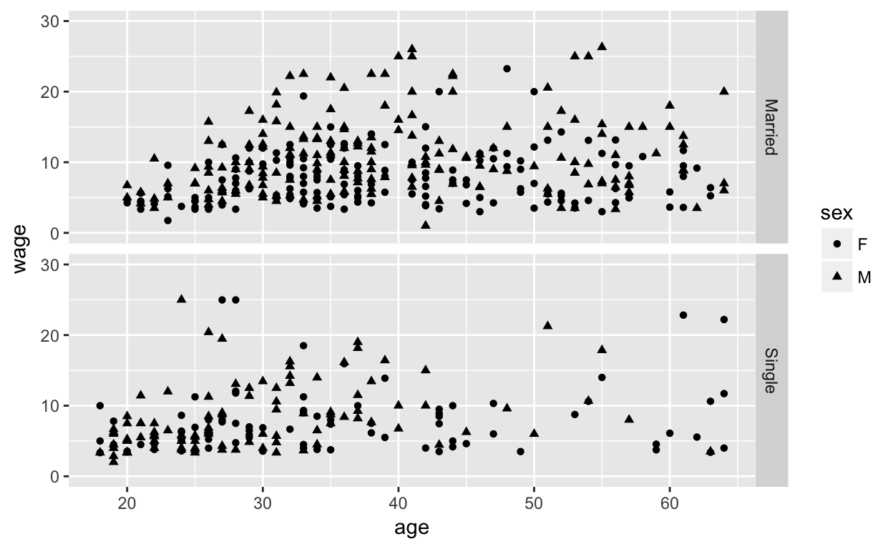
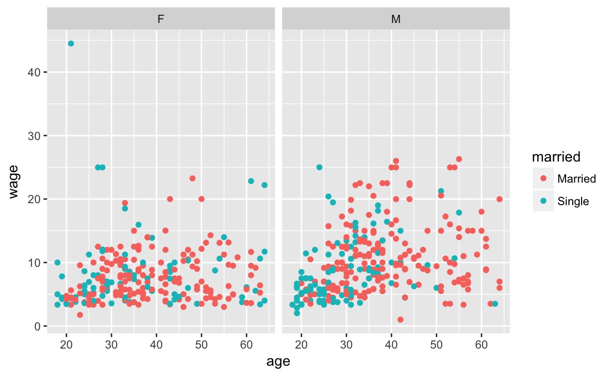

R has a wide variety of data types including scalars, vectors (numerical, character, logical), matrices, data frames, and lists.
For example the number 2 is a scalar. We can give 2 the name a using the assignment operator -> which is essentially the same thing as =.
a <- 2 #assign the value 2 to a
a## [1] 2Similarly we can assign the name vec to a character vector as follows:
vec <- c("I","love","learning","R")
vec## [1] "I" "love" "learning" "R"Here the values I, and love are strings which we must put in quotes so that R doesn’t think they are the name for something.
You can write a numerical vector two different ways:
c(1,2,3,4,5)## [1] 1 2 3 4 51:5## [1] 1 2 3 4 5The empty vector is c()
c()## NULLWe will see other examples of data types later.
A condition is either true or false (a logical data type). For example, when we write
a <- 2
b <- 3
a<b #less than## [1] TRUEa==b #equals## [1] FALSEa!=b #not equal## [1] TRUEa<b is a condition that takes the value TRUE (since 2 is less than 3) while a==b is a condition that takes the value FALSE.
We use conditions when we write conditional statements. A conditional statement says to do one thing if a condition is TRUE and something else when it is FALSE.
The basic syntax for an if/else statement is
if ( condition ) {
statement1
} else {
statement2
}You can also write this on a single line as:
if(condition) statement1 else statement2In the exercise below you will determine whether the year 2013 is a leap year. The condition for a year to be a leap year is written in terms of the modulo operator, %% in R.
For example
15 %% 2## [1] 115 %% 3## [1] 0We see that 15 modulo 2 is one because the remainder when you divide 15 by 2 is 1. Similarly when you divide 15 by 3 you don’t get any remainder.
A variable that takes two values (TRUE or FALSE) is called a boolean variable. We can use a boolean variable to write a condition.
Assign TRUE to the boolean variable leapYear if the integer variable year is a leap year and FALSE otherwise. The rule for determining leap years is that one of the following conditions must hold: 1) the year is divisible by 4 but not divisible by 100, or 2) the year is divisible by 400.
Below you will figure out if the year 2013 is a leap year.year <- 2013
if( __fill_in__ ) {leapyear <- __fill_in__
}else{
leapyear <- __fill_in__
}
leapyear# if((year%%4==0 & year%%100 != 0) | (year%% 400 ==0) ) leapyear <- TRUE
# etc....year <- 2013
if((year%%4==0 & year%%100 != 0) | (year%% 400 ==0) ) leapyear <- TRUE else leapyear <- FALSE
leapyearWhen we want to repeat a group of statements (such as to roll a die and append the face value to a vector) we write a loop in R. The R commands for and while are often used.
The syntax of for and while loops is:
for ( name in vector ){
statement
}For example i in 1:6 assigns the name i to values 1,2,3,4,5,6 in the vector 1:6. For each value of i we roll a coin i times, assign those face values to the vector a and print the value of a.
for(i in 1:6){
a <- sample(1:6,i)
print(a)
}## [1] 2
## [1] 5 1
## [1] 2 6 4
## [1] 6 3 2 1
## [1] 4 1 6 2 5
## [1] 2 4 6 5 1 3while (condition){
statement
}For example starting with i equal to 1, while the condition i<6 is true we roll a coin i times, assign those face values to the vector a, print the value of the vector, and increase the value of i by 1.
i <- 1
while(i<7){
a <- sample(1:6,i)
print(a)
i <- i+1
}## [1] 4
## [1] 2 6
## [1] 3 4 6
## [1] 1 6 2 4
## [1] 1 4 3 2 5
## [1] 2 1 5 6 4 3Here is some examples for you to try:
Simulate rolling a die until you get a 4. Create a vector of your rolls.
# sample(1:2,1) is a coin toss. Adapt this to roll a die.myrolls <- c() #empty vector
roll <- 1000 #some number not 1 through 6
while(roll != 4){
roll <- sample(1:6,1)
myrolls=c(myrolls,roll)
}
myrollsThe break statement causes a loop to exit. You will see an example in the next question.
Here is a character vector called chars
# Pre-defined variables
rquote <- "R's internals are irrefutably intriguing"
chars <- strsplit(rquote, split = "")[[1]]## [1] "R" "'" "s" " " "i" "n" "t" "e" "r" "n" "a" "l" "s" " " "a" "r" "e"
## [18] " " "i" "r" "r" "e" "f" "u" "t" "a" "b" "l" "y" " " "i" "n" "t" "r"
## [35] "i" "g" "u" "i" "n" "g"Count the number of “r”s (both “r” and “R”) that come before the first letter “u” (both “u” and “U”) in the rquote character string. Store the result in a variable rcount.
# you are counting the number of "r" or "R". Use an if statement here and update rcount.rcount <- 0
for (char in chars) {
if (char == "u" | char == "U") {
break
}
if (char == "r" | char == "R") {
rcount <- rcount + 1
}
}
# Print the resulting rcount variable to the console
rcountR has many built in functions such as mean() which give the average of a numerical vector a:
a <- c(1,2,3)
mean(a)## [1] 2One of the great strengths of R is the user’s ability to write their own functions. In programming, you use functions to incorporate sets of instructions that you want to use repeatedly or that, because of their complexity, are better self-contained in a sub program and called when needed.
A function is a piece of code written to carry out a specified task; it can or can not accept arguments or parameters and it can or can not return one or more values.
The syntax of a user defined function in R is:
my_func <- function(arguements){ #assigns a name my_func to the function
computations on the arguements
}
my_func() #calls the functionFor example here is a function that squares any number you give it. When we call the function my_func(10) the value 10 is assigned the name n inside the body of the function. The value of n*n is returned.
my_func <- function(n){
return(n*n)
}
my_func(10)## [1] 100Recall this is how you tested that a year is a leap year:
year <- 2013
if((year%%4==0 & year%%100 != 0) | (year%% 400 ==0) ){
leapyear <- TRUE}
else{
leapyear <- FALSE
}
leapyearMake a function called test_year that inputs a year and outputs whether the year is a leap year. Call the function with the year 2000 to see whether 2000 was a leap year.
# test_year <- function(year){
#etc ...
#}
# test_year(2000)test_year <- function(year){
if((year%%4==0 & year%%100 != 0) | (year%% 400 ==0)) {
leapyear <- TRUE}
else {
leapyear <- FALSE}
leapyear
}
test_year(2000)Recall that this is how we simulated rolling a die until you get a 4 creating a vector of
myrolls <- c()
roll <- 1000 #some number not 1 through 6
while(roll != 4){
roll <- sample(1:6,1)
myrolls <- c(myrolls,roll)
}
myrollsWrite a function called coin_toss that inputs a positive integer, n, and outputs a random vector of tails and heads (1 and 0) until you get your nth head. Call the function with n=3 and examine the vector output to make sure it makes sense.
#coin_toss <- function(n){
# etc...
#}
#coin_toss(3)coin_toss <- function(n){
mytosses <- c()
counter <- 0
while(counter<n){
toss <- sample(0:1,1)
mytosses <- c(mytosses,toss)
if(toss==1){
counter=counter+1
}
}
mytosses
}
coin_toss(3)Write a function that approximates the value of pi by summing the terms of this series: 4/1-4/3+4/5-4/7+4/9-4/11+ … The function has a single input, n, which is the number of terms to sum. It outputs the sum of the first n terms of this series, as well as the difference of the sum and pi. Call the function to estimate pi with 20 terms.
#use a for loop
#sum=0
#for(i in 1:n){
# increment <- (-1)^(i+1) * 4/(2*i-1)
# sum=sum + increment
#to return multiple values use a list (i.e. return(list(sum, pi-sum))my_pi <- function(n){
sum=0
for(i in 1:n){
increment <- (-1)^(i+1) * 4/(2*i-1)
sum=sum + increment
}
return(list(sum, pi-sum))
}
my_pi(20)ggplot2 is a popular package in R for making graphics. We will cover the basics below by presenting a number of examples and then giving you a cheat sheet so that you can make up your own examples.
Here is the data frame mosaicData::CPS85 giving data from the 1985 Current Population Survey. (mosaicData is a package and CPS85 is a data frame data type in that package)
head(CPS85) #we examine just the first 6 rows of CPS85The data frame consists of columns which are vectors of the same length, and rows which are observations of each vector.
The package ggplot2 contains the built in function ggplot which takes as its first arguement a data frame and as its second arguement information about which variable variable in the data frame is x and which is y. This pairing is a special function aes (called an aethetic). The function ggplot outputs an x y empty graph. Below we assign this empty graph the name frame and display it.
frame <- ggplot(CPS85,aes(x=age,y=wage))
frame
We will use the piping operator %>% from the dplyr package (included in your DataComputing package) to make it a little easier to read the above commond.
We can pipe the data frame CPS85 into ggplot using the piping operator %>%.
frame <- CPS85 %>% ggplot(aes(x=age,y=wage))
frameWe will layer our graph by adding points to it using the command geom_point().
frame <- CPS85 %>% ggplot(aes(x=age,y=wage))
frame + geom_point()
We can assign a shape to each point using the aesthetic function inside of geom_point. Here, shape is assigned to the variable sex. This will create a legend.
frame <- CPS85 %>% ggplot(aes(x=age,y=wage))
frame + geom_point(aes(shape=sex))
We can separate married and unmarried individuals by faceting our graph according to the variable married.
frame <- CPS85 %>% ggplot(aes(x=age,y=wage))
frame + geom_point(aes(shape=sex)) + facet_grid(married ~ .)
We can change the range of values along the y axis:
frame <- CPS85 %>% ggplot(aes(x=age,y=wage))
frame + geom_point(aes(shape=sex)) + facet_grid(married ~ .) + ylim(0,30)## Warning: Removed 1 rows containing missing values (geom_point).
Here is a cheet sheet: (Rstudio)[https://www.rstudio.com/wp-content/uploads/2015/03/ggplot2-cheatsheet.pdf]
It is important to be able to look up the syntax and aesetics for the different geoms. Here is a good resourse from ggplot2.org
Please make

from the dataframe:
head(CPS85)#use CPS85 %>% ggplot(aes(x=age,wage))
#use facet_wrap(~sex)CPS85 %>% ggplot(aes(x=age,wage)) + geom_point(aes(color=married)) + facet_wrap(~sex)sample() in RIn this lab we will show you how to make a simulation in R. Two very handy built in functions for simulations is sample() and replicate(). You saw sample() in lab 1 but here is a refresher.
In Nevada Roulette you spin a ball around a wheel containing 38 pockets of different colors. 18 pockets are red, 28 are black, and 2 are green. The ball randomly falls in one of the pockets.
Lets create a vector of outcomes of playing roulette 10 times. Our goal is to see what proportion of times we the ball lands in the red pocket.
vec <- sample(c("b","r","g"),size=10,prob=c(18/28,18/38,2/38),replace=TRUE)
vec## [1] "r" "b" "r" "g" "b" "b" "b" "r" "b" "b"You count the number of “r” in the sample vector (i.e. the number of red pockets you landed on in 10 games). Try and understand what is happening in the following code.
vec=="r" #this is a boolean vector## [1] TRUE FALSE TRUE FALSE FALSE FALSE FALSE TRUE FALSE FALSEsum(vec=="r")## [1] 3sum(vec=="r")/length(vec)## [1] 0.3#library(DataComputing)Use the function sample() to simulate rolling a fair die 60 times. Compute the fraction of 1 that you get.
vec <- sample(c(1,2,3,4,5,6),size=60,prob=c(1/6,1/6,1/6,1/6,1/6,1/6),replace=TRUE)
vec
sum(vec==1)/length(vec)Suppose you have vectors
a <- c(1,2,3)
b <- c("a","b","c")You can make a data frame with column variables a and b using the function data.frame()
data.frame(a,b)I would like you to create a data frame with column variables equal to the number of coin tosses and the number of heads you get for different number of coin tosses. You should have all of the tools to do this.
#library(DataComputing)size_vec=c()
num_heads_vec=c()
for(size in c(10,100)){
vec <- sample(c("head","tail"),size=size,prob=c(1/2,1/2),replace=TRUE)
size_vec=c(size_vec,size)
num_heads_vec <- c(num_heads_vec,sum(vec=="head"))
}
df <- data.frame(size_vec,num_heads_vec)
dfThe Law of averages in statistics states that if you flip a fair coin n times that the proportion of heads that you get will get closer and closer to .5 as n gets larger. Lets test the law of averages with a simulation.
Create a data frame with 3 columns. One column is the number of flips. Say you flip the coin 100,1000, 10000, 100000, 1000000 times. The second column is the percent of heads that you get. The third column is the percent error which is the difference between the percent of heads that you get and the percent of heads that you were expecting.
#library(DataComputing)size_vec=c()
num_heads_vec=c()
for (size in c(100, 1000, 10000, 100000, 1000000)){
vec <- sample(c("head","tail"),size=size,prob=c(1/2,1/2),replace=TRUE)
size_vec=c(size_vec,size)
num_heads_vec <- c(num_heads_vec,sum(vec=="head"))
}
df <- data.frame(size_vec, percent_heads= 100*num_heads_vec/size_vec, percent_error=100*(num_heads_vec - size_vec*.5)/size_vec)
dfDoes your simulation support the Law of averages?
replicate() in Rreplicate() repeats a function over and over again. For example suppose you have a function that returns the phrase “I Love Stats”. Replicate print this out many times. It is generally faster than using a traditional loop.
B=5
fun <- function(){
return("I love Stats!")
}
fun()## [1] "I love Stats!"my_vec <- replicate(B,fun())
my_vec## [1] "I love Stats!" "I love Stats!" "I love Stats!" "I love Stats!"
## [5] "I love Stats!"Here is another example for you to try:
What is better deal?
Win $1 if out of 10 flips of fair coin you get exactly 5 heads.
Win $1 if out of 100 flips of fair coin you get exactly 50 heads.
Make a simulation of flipping a coin size=100 number times and seeing if we get exactly 50. We will do this exeriment B=200 times and compute the percentage of times that it is exactly 50.
B=200
fun <- function(size){
vec <- sample(c(0,1),size = size,prob=c(.5,.5),replace = TRUE)
sum(vec)==(.5)*size
}
my_vec <- replicate(B, fun(10)) #10 flips
my_vec
mean(my_vec)
my_vec <- replicate(B, fun(100)) #100 flips
my_vec
mean(my_vec)Make sure you understand what is going on in your solution of this simulation. Your simulation should show you that you should bet on getting exactly half of a smaller number of tosses? Can you explain why this is true intuitively?